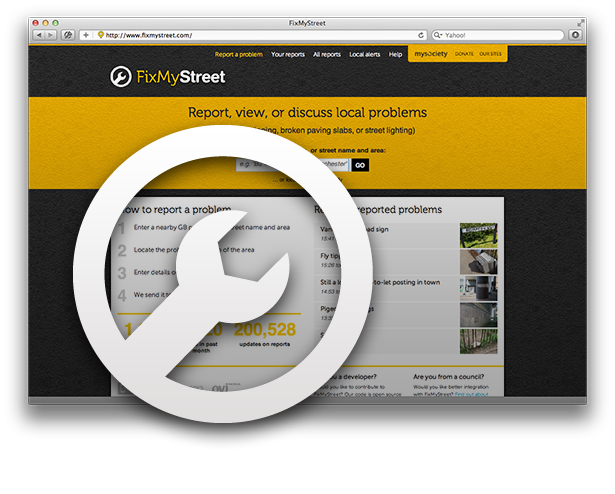

- 
FixMyStreet
a street issue-reporting and mapping application that allows anybody to report problems in their local area and get them fixed, simplifying the process for both the public and local authorities.
-
For Organisations
We offer a version of FixMyStreet designed specifically for local authority websites.
-
Want to Volunteer?
We offer a version of FixMyStreet designed specifically for local authority websites.
-
Open Source Platform
Have a look at the code and guides and set an instance up in your own country.